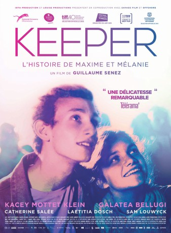
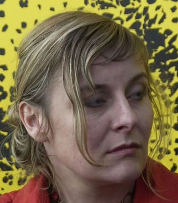

#10615 Keeper
 
 IMDB-Wertung: 6.6 / 10
IMDB-Wertung: 6.6 / 10  Tomatometer: 97
Tomatometer: 97  Metascore: 0
Metascore: 0 
Maxime und Mélanie, beide 15 Jahre alt und damit gerade der Kindheit entwachsen, verlieben sich ineinander. Für die Teenager ist es die erste große Liebe. Sie sammeln ihre ersten sexuellen Erfahrungen – die dazu führen, dass Mélanie schwanger wird. Als ihr Freund davon erfährt, nimmt er die Neuigkeit zunächst gar nicht gut auf. Es braucht etwas Zeit, bis sich Maxime mit der Idee anfreundet, Vater zu werden. Und dann ist er es schließlich, der Mélanie, die Entscheidungen gerne ihrem Freund oder ihrer Mutter überlässt, davon überzeugt, das Baby zu bekommen. Auf einmal ist also beschlossen, was für das Teenager-Paar vor kurzem fernab aller Lebensrealität schien: Obwohl Maxime und Mélanie selbst gerade noch Kinder waren, werden sie Eltern…
Jahr: 2015
Dauer: 89 Minuten
FSK: 12
Land: Belgien Studio: Film Kino TextTonspuren:
Untertitel:
Auflösung: 720p (1280x720) Größe: 1361 MB
Genre: Drama, Liebe
Regisseur: Guillaume Senez
Drehbuch: David Lambert, Marcia Romano, Guillaume Senez
Soundtrack:
Darsteller:
 Kacey Mottet Klein als Maxime
Kacey Mottet Klein als Maxime- Laetitia Dosch als La mère de Mélanie
-  Catherine Salée als La mère de Maxime
- Mathilde Warnier als
- Galatéa Bellugi als Mélanie
- Sam Louwyck als Le père de Maxime
- Cédric Vieira als Le coach
- Vincent Sornaga als L'assistant social
- Dominique Baeyens als La gynécologue
- Béatrice Didier als La psychologue
- Corentin Lobet als Le coordinateur
- Aaron Duquaine als Lionel, le petit frère
- Leopold Buchsbaum als Thibaut
- Sophia Leboutte als La directrice maison maternelle
- Mounia Raoui als Médecin du centre
- Théo Dardenne als Fred
- Alain Bellot als Le délégué
- Sarah Ber als Amie de Mélanie
- Emmanuelle Gilles-Rousseau als Jeune fille toilettes
- Karol Tatiana Ararat Mora als Copine Fred
- Bastien Rempp als Bastien
- Hélène Kapako als Fille maison maternelle
- Zoé De Smet als Lucas, le bébé
- Paloma Garcia Martens als
- Arthur Mas als Arthur
Datei: X:\2015(G-M)\Keeper (2015, FSK12, 1280x720).mkv seit 04.02.2019
Festplatte: HD 2015(A-Z)
 Es gibt insgesamt 129 Filme in der Gruppe '2015(G-M)'
Es gibt insgesamt 129 Filme in der Gruppe '2015(G-M)'